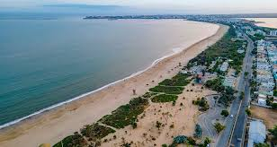
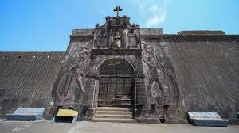
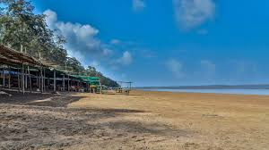
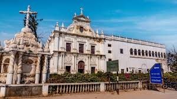

Diu Fort

An expansive and imposing fort built by the Portuguese in 1535, offering magnificent views of the Arabian Sea and featuring a lighthouse.
Ghoghla Beach

A serene and beautiful stretch of golden sand, known for being one of the cleanest beaches and popular for various water sports.
Moti Daman Fort

The larger of the two Daman forts, encompassing the old city, administrative buildings, and the famous Our Lady of the Sea Church.
Jampore Beach

Known for its quiet, blackish-sand shoreline, where the sea is low and safe for swimming, popular for sunset viewing.
St. Paul's Church

A beautiful 17th-century Portuguese church known for its ornate Baroque architecture and elaborate wood carvings, considered one of the best examples of Portuguese architecture in India.